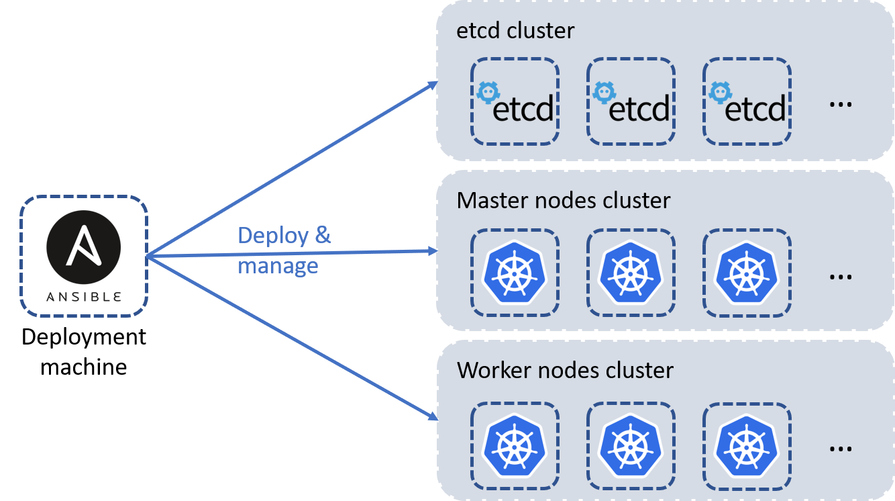

Table of Contents¶
This is a list of points that will be explained in this instructions file for the AgoraKube project :
- High-level Architecture
- Prerequisites
- Nodes Setup
- K8S Cluster Configuration
- Agorakube Parameters
- Kubernetes deployment
High-level Architecture¶
Below a diagram of the high-level architecture deployed by AgoraKube : 
Notes : This distibution is aimed to be customizable so you can choose :
- Where the etcd will be deployed (with the master or not)
- The number of master nodes to deploy (from 1 to many)
- The number of etcd nodes to deploy (from 1 to many)
- The number of worker nodes to deploy (from 1 to many)
- The number of storage nodes to deploy (from 1 to many)
Prerequisites¶
This section explains what are the prerequisites to install AgoraKube in your environment.
OS¶
Below the OS currently supported on all the machines :
- Ubuntu 18.04 & 20.04 - amd64
- Centos 7 & 8 - amd64
- Debian 10
Node Sizing¶
Below the sizing prerequisites for all the nodes (master and worker) :
- 2 GB or more of RAM per machine
- 2 CPUs or more
- Full network connectivity between all machines in the cluster (public or private network is fine)
- Full internet access
- Unique hostname, MAC address, and product_uuid for every node. See here for more details.
- Certain ports are open on your machines. See here for more details.
- Swap disabled. You MUST disable swap in order for the kubelet to work properly.
Below the sizing prerequisites for the deployment machine :
- 2 GB or more of RAM
- 1 CPU or more
- Full network connectivity between all machines in the cluster (public or private network is fine)
- Full internet access
Nodes Setup¶
This section explains how to setup notes before deploying Kubernetes Clusters with AgoraKube.
Deployment node¶
The deployment node is an Ansible server which contains all Ansible roles and variables used to deploy and configure Kubernetes Clusters with AgoraKube distribution.
- Connect to the deployment node and run the following command :
bash <(curl -s https://raw.githubusercontent.com/ilkilab/agorakube/master/setup-deploy.sh)
K8S nodes¶
The K8S nodes will host all the components needed for a Kubernetes cluster Control and Data planes.
The prerequisites are:
- SSH Server (like Openssh)
- Python2
You can run the following command to automatically install those packages :
bash <(curl -s https://raw.githubusercontent.com/ilkilab/agorakube/master/setup-hosts.sh)
SSH keys creation¶
Agorakube is using Ansible to deploy Kubernetes. You have to configure SSH keys to ensure the communication between the deploy machine and the others.
On the deploy machine, create the SSH keys :
ssh-keygen
You can let everything by default.
When your keys are created, you have to copy the public key in the other machine in the folder /home/yourUser/.ssh/authorized_keys, or you can use the following commands to copy the key :
ssh-copy-id -i .ssh/id_rsa.pub yourUser@IP_OF_THE_HOST
You have to execute this command for each node of your cluster
Once your ssh keys have been pushed to all nodes, modify the file "agorakube/hosts" to add the user/ssh-key (in section SSH Connection settings) that Agorakube will use to connect to all nodes
K8S Cluster Configuration¶
AgoraKube enables an easy way to deploy and manage customizable K8S clusters.
Inventory file¶
The first file to modify is "./hosts". This file contains all architecture information about your K8S Cluster.
All K8S servers names must be filled in by their FQDN.
The next Sample deploys K8S components in HA mode on 6 nodes (3 etcd/masters nodes and 3 workers nodes) :
[deploy]
master1 ansible_connection=local
[masters]
master1 ansible_host=10.10.20.3
master2 ansible_host=10.10.20.13
master3 ansible_host=10.10.20.23
[etcd]
master1 ansible_host=10.10.20.3
master2 ansible_host=10.10.20.13
master3 ansible_host=10.10.20.23
[workers]
worker1 ansible_host=10.10.20.4
worker2 ansible_host=10.10.20.5
worker3 ansible_host=10.10.20.6
[storage]
worker1 ansible_host=10.10.20.4
worker2 ansible_host=10.10.20.5
worker3 ansible_host=10.10.20.6
[all:vars]
advertise_ip_masters=10.10.20.3
# SSH connection settings
ansible_ssh_extra_args='-o StrictHostKeyChecking=no'
ansible_user=vagrant
ansible_ssh_private_key_file=/home/vagrant/ssh-private-key.pem
The deploy section contains information about how to connect to the deployment machine.
The etcd section contains information about the etcd machine(s) instances.
The masters section contains information about the masters nodes (K8S Control Plane).
The workers section contains information about the workers nodes (K8S Data Plane).
The storage section contains information about the storage nodes (K8S Storage Plane).
The all:vars section contains information about how to connect to K8S nodes.
The SSH Connection settings section contain information about the SSH connexion. You have to modify the variable ansible_ssh_private_key_file with the path where your public key is stored. ansible_user User used as service account by Agorakube to connect to all nodes. User must be sudoer.
Configuration file¶
The "./group_vars/all.yaml" file contains all configuration variables that you can customize to make your K8S Cluster fit your needs.
Sample file will deploy containerd as container runtime, kube-router as CNI plugin and coredns as DNS service :
---
# CERTIFICATES
cn_root_ca: ilkilabs
c: FR
st: Ile-De-France
l: Paris
expiry: 87600h
rotate_certs_pki: false
rotate_full_pki: false
# Components version
etcd_release: v3.4.7
kubernetes_release: v1.18.2
delete_previous_k8s_install: False
delete_etcd_install: False
check_etcd_install: True
# IPs-CIDR Configurations
cluster_cidr: 10.33.0.0/16
service_cluster_ip_range: 10.32.0.0/24
kubernetes_service: 10.32.0.1
cluster_dns_ip: 10.32.0.10
service_node_port_range: 30000-32000
kube_proxy_mode: ipvs
kube_proxy_ipvs_algotithm: rr
cni_release: 0.8.5
# Custom features
runtime: containerd
network_cni_plugin: kube-router
flannel_iface: default
ingress_controller: nginx
dns_server_soft: coredns
populate_etc_hosts: yes
k8s_dashboard: True
service_mesh: none
linkerd_release: stable-2.6.0
install_helm: False
init_helm: False
install_kubeapps: False
# Calico
calico_mtu: 1440
# Security
encrypt_etcd_keys:
# Warrning: If multiple keys are defined ONLY LAST KEY is used for encrypt and decrypt.
# Other keys are used only for decrypt purpose
key1:
secret: 1fJcKt6vBxMt+AkBanoaxFF2O6ytHIkETNgQWv4b/+Q=
# Data Directory
data_path: "/var/agorakube"
etcd_data_directory: "/var/lib/etcd"
#restoration_snapshot_file: /path/snopshot/file Located on {{ etcd_data_directory }}
# KUBE-APISERVER spec
kube_apiserver_enable_admission_plugins:
# plugin AlwaysPullImage can be deleted. Credentials would be required to pull the private images every time.
# Also, in trusted environments, this might increases load on network, registry, and decreases speed.
# - AlwaysPullImages
- NamespaceLifecycle
# EventRateLimit is used to limit DoS on API server in case of event Flooding
- EventRateLimit
- LimitRanger
- ServiceAccount
- TaintNodesByCondition
- PodNodeSelector
- Priority
- DefaultTolerationSeconds
- DefaultStorageClass
- StorageObjectInUseProtection
- PersistentVolumeClaimResize
- MutatingAdmissionWebhook
- NodeRestriction
- ValidatingAdmissionWebhook
- RuntimeClass
- ResourceQuota
# SecurityContextDeny should be replaced by PodSecurityPolicy
# - SecurityContextDeny
# Rook Settings
enable_rook: True
rook_dataDirHostPath: /data/rook
# Minio Settings
# Rook MUST be enabed.
enable_rook_minio: True
rook_minio_infra_access_key: admin
rook_minio_infra_secret_key: password
# Monitoring. Rook MUST be enabled to use monitoring (Monitoring use StorageClass to persist data)
enable_monitoring: False
# Enable Harbor Registry - Contain Chartmuseum, notary, clair, registry.
# Harbor will be expose by HTTPS with Ingress Resource.
# Rook MUST be enabled to use Harbor (Harbor use StorageClass to persist data)
install_harbor: False
harbor_ingress_host: harbor.ilkilabs.io
notary_ingress_host: notary.ilkilabs.io
harbor_admin_password: ChangeMe!
Note : You can also modify the IPs-CIDR if you want.
Kubernetes deployment¶
Once all configuration files are set, run the following command to launch the Ansible playbook that will deploy the pre-configured Kubernetes cluster :
sudo ansible-playbook agorakube.yaml